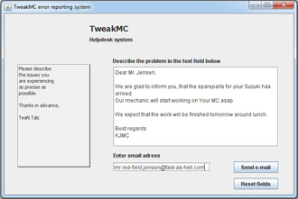

If the user encounters unexpected errors that cannot be solved by the user or system administrator, the E-mail system can be very helpful.
Another feature that the system provides, is the possibillity of sending an email directly to a user-specified email adress, which could be the owner of a bike.
There is a stand-alone interface for this function where the user can write some text and a email adress.
The intention of this feature is to send copies of f.x. the order note or the measruements.
Although the attach-file feature has not been implemented yet.
The interface for the service email can be seen on the image below

Note: The interface is allso used for sending user specific error descriptions to the developers, which is why there are "error-test" all over the interface.